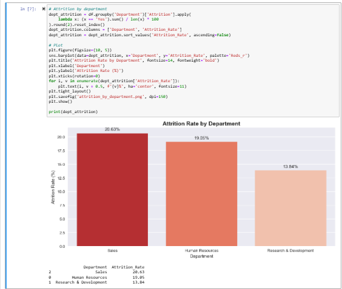
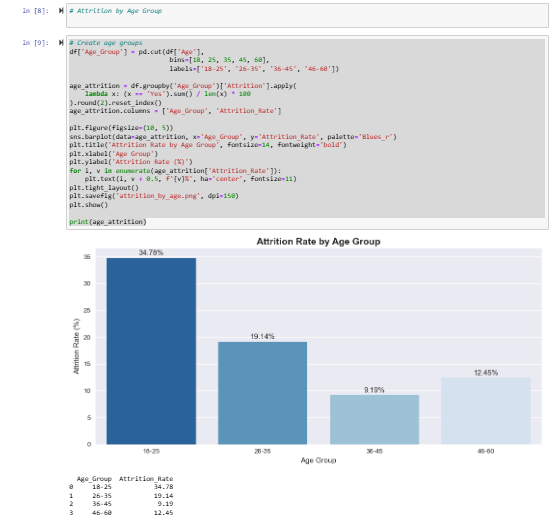
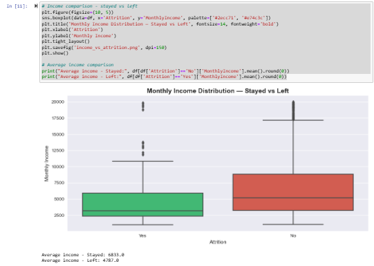
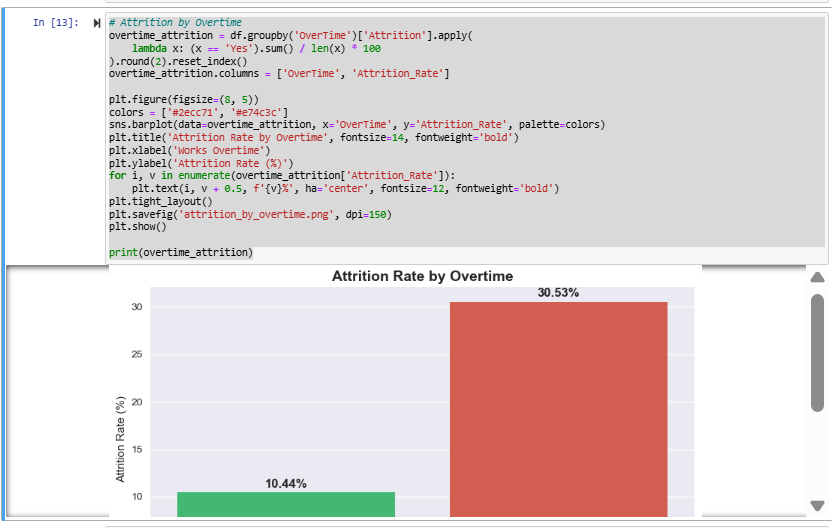
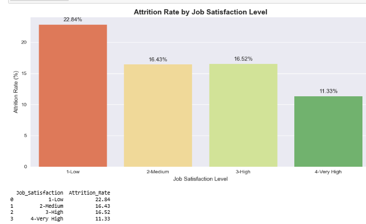
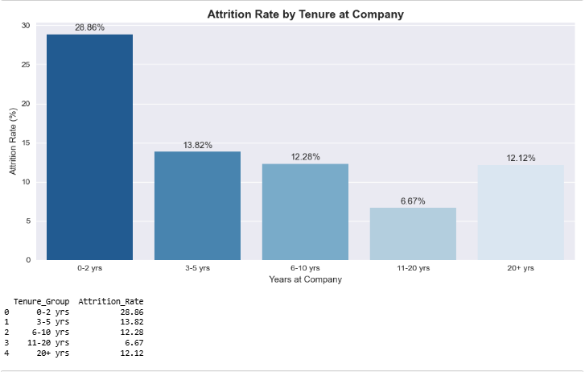

Case Study: IBM HR Attrition Analysis (Python EDA)
Python • Pandas • NumPy • Matplotlib • Seaborn • Exploratory Data Analysis
1. Project Overview
This project analyses IBM's HR Analytics dataset to identify the key drivers of employee attrition — why employees leave and which groups are most at risk. The objective was to move beyond surface-level attrition numbers and uncover the specific combination of factors that predict departure, enabling HR leadership to take targeted preventive action.
The analysis covers the full EDA pipeline — data quality checks, univariate analysis, group-level comparisons using groupby and lambda functions, age and tenure banding using pd.cut(), and business insight generation with Seaborn visualizations.
2. Dataset
IBM HR Analytics Employee Attrition & Performance dataset — 1,470 employee records with 35 variables covering demographics, compensation, job satisfaction ratings, overtime status, tenure, and the target variable Attrition (Yes/No).
Data quality: Zero null values across all 35 columns. Zero duplicate records. No cleaning required — analysis proceeded directly to exploration.
3. GitHub Repository
View Python EDA Notebook on GitHub →
4. Overall Attrition Rate
237 employees left out of 1,470 total — 16.1% overall attrition rate. Approximately 1 in 6 employees left the company. This analysis identifies exactly which factors drive that number.
5. Analysis 1 — Attrition by Department

- Sales — 20.63% (highest)
- Human Resources — 19.05%
- Research & Development — 13.84% (most stable)
Sales has nearly 50% higher attrition than R&D. HR interventions should prioritise the Sales department — investigating workload, compensation competitiveness, and career growth opportunities specifically for Sales roles.
6. Analysis 2 — Attrition by Age Group

- 18–25 — 34.78% (nearly 1 in 3 young employees leaving)
- 26–35 — 19.14%
- 36–45 — 9.19% (most stable)
- 46–60 — 12.45%
Entry-level employees face below-market salaries and limited growth visibility. The 36–45 group is the most stable — mid-career employees who are well-established and compensated show significantly lower attrition. Early-career retention is a critical gap.
7. Analysis 3 — Attrition by Monthly Income

- Average income — Stayed: ₹6,833/month
- Average income — Left: ₹4,787/month
- Income gap: ₹2,046 per month
Employees who left earned ₹2,046 less per month on average. Salary is a significant contributing factor — but not the only driver. The overtime analysis below reveals burnout as an equally powerful predictor of attrition.
8. Analysis 4 — Attrition by Overtime

- No overtime — 10.44% attrition
- Works overtime — 30.53% attrition
The single most powerful finding in this analysis. Employees who work overtime are 3x more likely to leave than those who don't. Overtime is a stronger predictor of attrition than salary, department, or age group. Reducing mandatory overtime or compensating it fairly would have the highest direct impact on retention.
9. Analysis 5 — Attrition by Job Satisfaction

- Low satisfaction (1) — 22.84%
- Medium satisfaction (2) — 16.43%
- High satisfaction (3) — 16.52%
- Very High satisfaction (4) — 11.33%
Clear inverse relationship — as satisfaction increases, attrition decreases. Low satisfaction employees leave at double the rate of highly satisfied employees (22.84% vs 11.33%). Regular pulse surveys and targeted action plans based on results would provide early warning of attrition risk.
10. Analysis 6 — Attrition by Tenure

- 0–2 years — 28.86% (highest)
- 3–5 years — 13.82%
- 6–10 years — 12.28%
- 11–20 years — 6.67% (lowest)
- 20+ years — 12.12%
New employees (0–2 years) leave at nearly 3x the rate of long-tenured staff. This signals an onboarding problem — role expectations may not match reality, or starting compensation is below market. After 5 years attrition drops sharply as loyalty and company investment build.
11. The At-Risk Employee Profile
Combining all six analyses, the highest attrition risk employee is: young (18–25), working in Sales, earning below ₹4,787 per month, required to work overtime, with low job satisfaction, and within their first 2 years at the company. This combination of factors creates near-certain attrition. Targeting retention interventions specifically at this profile would have the highest return on investment.
12. Key Business Insights
- Overtime is the #1 attrition driver — 30.53% vs 10.44% for non-overtime workers
- Young employees (18–25) leave at 34.78% — an early-career retention crisis
- Employees who left earned ₹2,046 less per month on average
- Sales department loses 1 in 5 employees annually at 20.63% attrition
- 28.86% of new joiners (0–2 years) leave — onboarding needs urgent improvement
- Low satisfaction employees leave at double the rate of highly satisfied employees
13. Business Recommendations
- Reduce overtime dependency — hire additional headcount or redistribute workload to bring overtime attrition below 15%
- Increase starting salaries for entry-level roles to close the ₹2,046 monthly income gap
- Implement a Sales department retention programme covering mentoring, performance incentives, and workload review
- Strengthen onboarding for new joiners — structured 90-day programme with buddy system and early career check-ins
- Run quarterly job satisfaction pulse surveys with mandatory HR action plans on results
14. Python Concepts Demonstrated
- Data loading and inspection — read_csv(), info(), isnull(), duplicated()
- Target variable distribution — value_counts() with normalize parameter
- Group-level attrition rates — groupby() with lambda function
- Age and tenure banding — pd.cut() with custom bins and labels
- Visualisation — Seaborn barplot and boxplot with custom colour palettes
- Chart annotation — matplotlib text() for percentage data labels on bars
- Figure export — savefig() with dpi=150 for portfolio-quality images
- Derived columns — map() for satisfaction labels, pd.cut() for demographic groups
15. Final Outcome
This EDA project demonstrates the full Python analytics workflow — from raw data exploration to structured business recommendations. The analysis identifies overtime as the primary attrition driver, surfaces early-career retention as a critical risk, and provides a data-backed at-risk employee profile to guide targeted HR interventions.